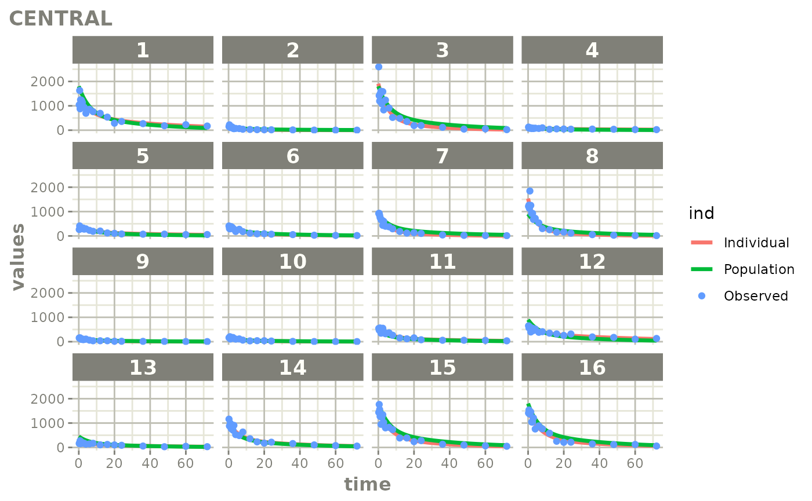
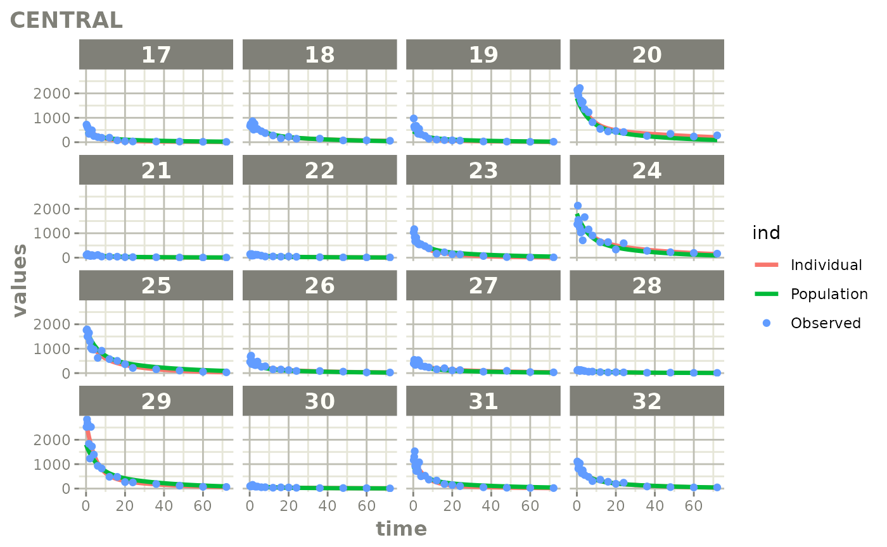
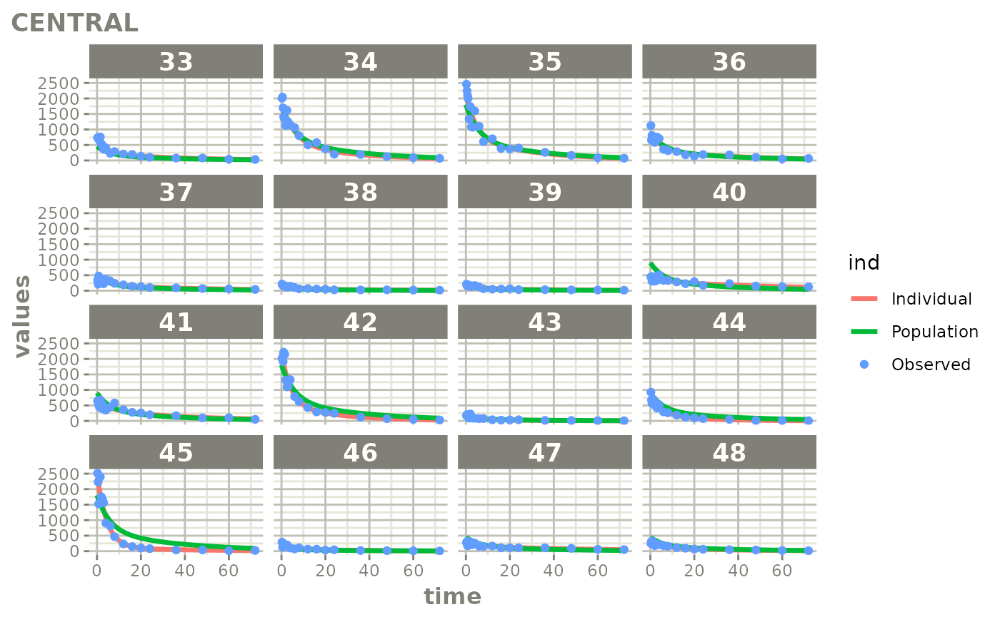
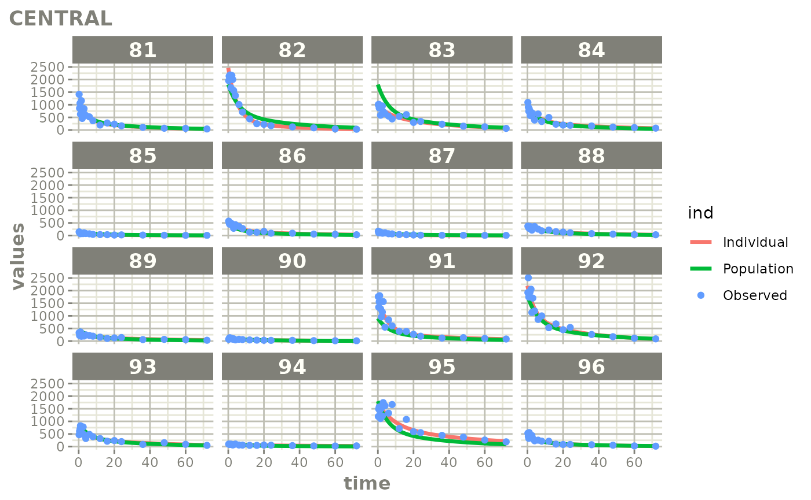

Created Augmented pred/ipred plots with `augPred()`
Source:vignettes/articles/create-augPred.Rmd
create-augPred.RmdThis is a simple process to create individual predictions augmented with more observations than was modeled. This allows smoother plots and a better examination of the observed concentrations for an individual and population.
Step 1: Convert the NONMEM model to
rxode2:
library(babelmixr2)
#> Loading required package: nlmixr2
#> Loading required package: nlmixr2data
library(nonmem2rx)
mod <- nonmem2rx(system.file("mods/cpt/runODE032.ctl", package="nonmem2rx"), lst=".res", save=FALSE)
#> ℹ getting information from '/home/runner/work/_temp/Library/nonmem2rx/mods/cpt/runODE032.ctl'
#> ℹ reading in xml file
#> ℹ done
#> ℹ reading in phi file
#> ℹ done
#> ℹ reading in lst file
#> ℹ abbreviated list parsing
#> ℹ done
#> ℹ done
#> ℹ splitting control stream by records
#> ℹ done
#> ℹ Processing record $INPUT
#> ℹ Processing record $MODEL
#> ℹ Processing record $THETA
#> ℹ Processing record $OMEGA
#> ℹ Processing record $SIGMA
#> ℹ Processing record $PROBLEM
#> ℹ Processing record $DATA
#> ℹ Processing record $SUBROUTINES
#> ℹ Processing record $PK
#> ℹ Processing record $DES
#> ℹ Processing record $ERROR
#> ℹ Processing record $ESTIMATION
#> ℹ Ignore record $ESTIMATION
#> ℹ Processing record $COVARIANCE
#> ℹ Ignore record $COVARIANCE
#> ℹ Processing record $TABLE
#> ℹ change initial estimate of `theta1` to `1.37034036528946`
#> ℹ change initial estimate of `theta2` to `4.19814911033061`
#> ℹ change initial estimate of `theta3` to `1.38003493562413`
#> ℹ change initial estimate of `theta4` to `3.87657341967489`
#> ℹ change initial estimate of `theta5` to `0.196446108190896`
#> ℹ change initial estimate of `eta1` to `0.101251418415006`
#> ℹ change initial estimate of `eta2` to `0.0993872449483344`
#> ℹ change initial estimate of `eta3` to `0.101302674763154`
#> ℹ change initial estimate of `eta4` to `0.0730497519364148`
#> ℹ read in nonmem input data (for model validation): /home/runner/work/_temp/Library/nonmem2rx/mods/cpt/Bolus_2CPT.csv
#> ℹ ignoring lines that begin with a letter (IGNORE=@)'
#> ℹ applying names specified by $INPUT
#> ℹ subsetting accept/ignore filters code: .data[-which((.data$SD == 0)),]
#> ℹ done
#> using C compiler: ‘gcc (Ubuntu 11.3.0-1ubuntu1~22.04) 11.3.0’
#> ℹ read in nonmem IPRED data (for model validation): /home/runner/work/_temp/Library/nonmem2rx/mods/cpt/runODE032.csv
#> ℹ done
#> ℹ changing most variables to lower case
#> ℹ done
#> ℹ replace theta names
#> ℹ done
#> ℹ replace eta names
#> ℹ done (no labels)
#> ℹ renaming compartments
#> ℹ done
#> ℹ solving ipred problem
#> ℹ done
#> ℹ solving pred problem
#> ℹ doneStep 2: convert the rxode2 model to
nlmixr2
In this step, you convert the model to nlmixr2 by
as.nlmixr2(mod); You may need to do a little manual work to get the residual
specification to match between nlmixr2 and NONMEM.
Once the residual specification is compatible with a nlmixr2 object,
you can convert the model, mod, to a nlmixr2 fit
object:
fit <- as.nlmixr2(mod)
#> → loading into symengine environment...
#> → pruning branches (`if`/`else`) of full model...
#> ✔ done
#> → finding duplicate expressions in EBE model...
#> [====|====|====|====|====|====|====|====|====|====] 0:00:00
#> → optimizing duplicate expressions in EBE model...
#> [====|====|====|====|====|====|====|====|====|====] 0:00:00
#> → compiling EBE model...
#> using C compiler: ‘gcc (Ubuntu 11.3.0-1ubuntu1~22.04) 11.3.0’
#> ✔ done
#> rxode2 2.0.13.9000 using 1 threads (see ?getRxThreads)
#> no cache: create with `rxCreateCache()`
#> → Calculating residuals/tables
#> ✔ done
#> → compress origData in nlmixr2 object, save 204016
#> → compress parHist in nlmixr2 object, save 1984
fit
#> ── nlmixr² nonmem2rx reading NONMEM ver 7.4.3 ──
#>
#> OBJF AIC BIC Log-likelihood Condition#(Cov)
#> nonmem2rx 15977.28 20185.64 20237.23 -10083.82 335.4129
#> Condition#(Cor)
#> nonmem2rx 2.096559
#>
#> ── Time (sec fit$time): ──
#>
#> setup table compress NONMEM as.nlmixr2
#> elapsed 0.029659 0.071 0.022 100.95 3.028
#>
#> ── Population Parameters (fit$parFixed or fit$parFixedDf): ──
#>
#> Parameter Est. SE %RSE Back-transformed(95%CI) BSV(CV%)
#> theta1 log Cl 1.37 0.0298 2.17 3.94 (3.71, 4.17) 32.6
#> theta2 log Vc 4.2 0.0295 0.703 66.6 (62.8, 70.5) 32.3
#> theta3 log Q 1.38 0.0547 3.96 3.98 (3.57, 4.42) 32.7
#> theta4 log Vp 3.88 0.0348 0.899 48.3 (45.1, 51.7) 27.5
#> RSV RSV 0.196 0.196
#> Shrink(SD)%
#> theta1 1.94%
#> theta2 2.46%
#> theta3 40.5%
#> theta4 28.4%
#> RSV
#>
#> Covariance Type (fit$covMethod): nonmem2rx
#> No correlations in between subject variability (BSV) matrix
#> Full BSV covariance (fit$omega) or correlation (fit$omegaR; diagonals=SDs)
#> Distribution stats (mean/skewness/kurtosis/p-value) available in fit$shrink
#> Censoring (fit$censInformation): No censoring
#> Minimization message (fit$message):
#>
#>
#> WARNINGS AND ERRORS (IF ANY) FOR PROBLEM 1
#>
#> (WARNING 2) NM-TRAN INFERS THAT THE DATA ARE POPULATION.
#>
#>
#> 0MINIMIZATION SUCCESSFUL
#> NO. OF FUNCTION EVALUATIONS USED: 320
#> NO. OF SIG. DIGITS IN FINAL EST.: 2.5
#>
#> IPRED relative difference compared to Nonmem IPRED: 0%; 95% percentile: (0%,0%); rtol=6.43e-06
#> PRED relative difference compared to Nonmem PRED: 0%; 95% percentile: (0%,0%); rtol=6.41e-06
#> IPRED absolute difference compared to Nonmem IPRED: 95% percentile: (2.25e-05, 0.0418); atol=0.00167
#> PRED absolute difference compared to Nonmem PRED: 95% percentile: (1.41e-07,0.00382); atol=6.41e-06
#> nonmem2rx model file: '/home/runner/work/_temp/Library/nonmem2rx/mods/cpt/runODE032.ctl'
#>
#> ── Fit Data (object fit is a modified tibble): ──
#> # A tibble: 2,280 × 27
#> ID TIME DV PRED RES IPRED IRES IWRES eta1 eta2 eta3 eta4
#> <fct> <dbl> <dbl> <dbl> <dbl> <dbl> <dbl> <dbl> <dbl> <dbl> <dbl> <dbl>
#> 1 1 0.25 1041. 1750. -710. 1215. -175. -0.732 -0.144 0.375 0.0650 0.241
#> 2 1 0.5 1629 1700. -70.8 1192. 437. 1.87 -0.144 0.375 0.0650 0.241
#> 3 1 0.75 878. 1651. -774. 1169. -291. -1.27 -0.144 0.375 0.0650 0.241
#> # ℹ 2,277 more rows
#> # ℹ 15 more variables: ipred <dbl>, CENTRAL <dbl>, PERI <dbl>, cl <dbl>,
#> # v <dbl>, q <dbl>, v2 <dbl>, v1 <dbl>, scale1 <dbl>, k21 <dbl>, k12 <dbl>,
#> # f <dbl>, rescv <dbl>, tad <dbl>, dosenum <dbl>Step 3: Create and plot an augmented prediction
ap <- augPred(fit)
#> using C compiler: ‘gcc (Ubuntu 11.3.0-1ubuntu1~22.04) 11.3.0’
head(ap)
#> values ind id time Endpoint
#> 1 1239.488 Individual 1 0.0000 CENTRAL
#> 2 1215.358 Individual 1 0.2500 CENTRAL
#> 3 1191.924 Individual 1 0.5000 CENTRAL
#> 4 1169.164 Individual 1 0.7500 CENTRAL
#> 5 1147.057 Individual 1 1.0000 CENTRAL
#> 6 1109.689 Individual 1 1.4398 CENTRAL
plot(ap)